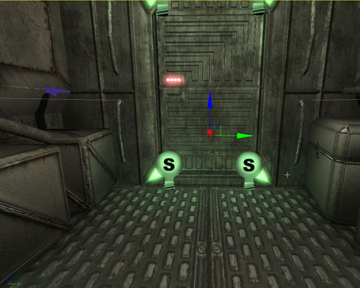
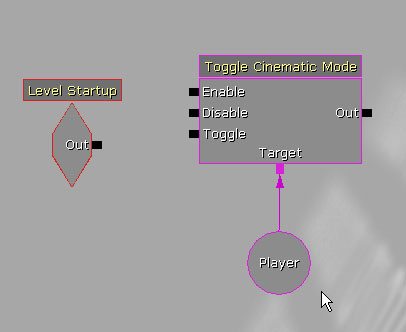
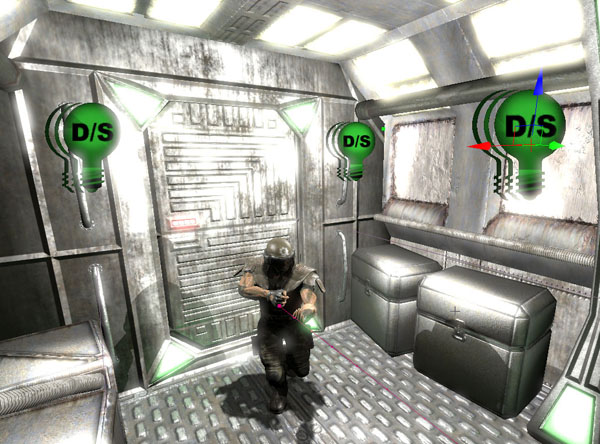
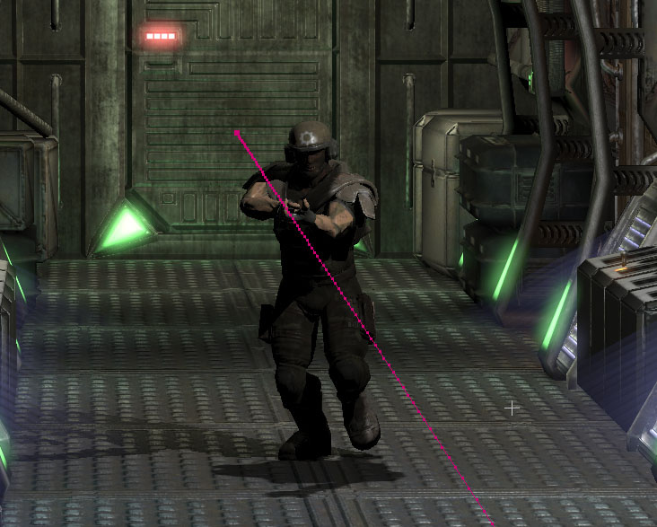
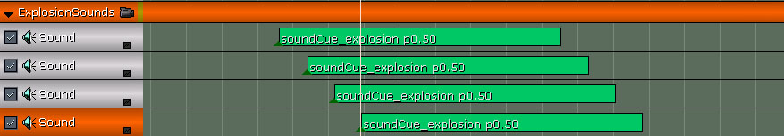

UDN
Search public documentation:
MasteringUnrealCinematicSequences
日本語訳
中国翻译
한국어
Interested in the Unreal Engine?
Visit the Unreal Technology site.
Looking for jobs and company info?
Check out the Epic games site.
Questions about support via UDN?
Contact the UDN Staff
中国翻译
한국어
Interested in the Unreal Engine?
Visit the Unreal Technology site.
Looking for jobs and company info?
Check out the Epic games site.
Questions about support via UDN?
Contact the UDN Staff
- Chapter 21: Creating Cinematic Sequences
- What is a Cinematic Sequence?
- Camera Actor
- Camera Effects
- DumpMovie Command
- Putting It All Together
- TUTORIAL 21.1 Character Setup
- TUTORIAL 21.2 Initial Kismet Setup
- TUTORIAL 21.3 Blocking Out Character Movement
- TUTORIAL 21.4 Base Animation Track
- TUTORIAL 21.5 Camera 1 Setup and Blocking
- TUTORIAL 21.6 Camera 2 Setup and Blocking
- TUTORIAL 21.7 Music Track
- TUTORIAL 21.8 Camera Edits, Part I: Cuts
- TUTORIAL 21.9 Camera Edits, Part II: Slomo
- TUTORIAL 21.10 Camera Edits, Part III: Fades
- TUTORIAL 21.11 Camera 1 Basic Depth of Field Effect, Part I: Recording Values
- TUTORIAL 21.12 Camera 1 Basic Depth of Field Effect, Part II: Setting Keys
- TUTORIAL 21.13 Camera 1 Zoom
- TUTORIAL 21.14 Camera 1 Advanced Depth of Field Effect, Part I: DOF_FocusInnerRadius
- TUTORIAL 21.15 Camera 1 Advanced Depth of Field Effect, Part II: DOF_BlurKernelSize
- TUTORIAL 21.16 Camera 2 Zoom
- TUTORIAL 21.17 Camera 2 Depth of Field Effect
- TUTORIAL 21.18 Accent Lighting, Part I: Placing Lights
- TUTORIAL 21.19 Accent Lighting, Part II: Left Rear Brightness Track
- TUTORIAL 21.20 Accent Lighting, Part III: Right Rear Brightness Track
- TUTORIAL 21.21 Accent Lighting, Part IV: Front Brightness Track
- TUTORIAL 21.22 Explosion Particle Effects, Part I: Placing Emitters
- TUTORIAL 21.23 Explosion Particle Effects, Part II: Particle Toggle Tracks
- TUTORIAL 21.24 Explosion Lights, Part I: Placing Lights
- TUTORIAL 21.25 Explosion Lights, Part II: Brightness Tracks
- TUTORIAL 21.26 Explosion Sounds
- TUTORIAL 21.27 Evasion Animation Track, Part I: Key Creation
- TUTORIAL 21.28 Evasion Animation Track, Part II: Curve Adjustment
- TUTORIAL 21.29 Additional Animation Track, Part I: Key Placement
- TUTORIAL 21.30 Additional Animation Track, Part II: Curve Adjustment
- TUTORIAL 21.31 Finalize Character Movement
Chapter 21: Creating Cinematic Sequences
What is a Cinematic Sequence?
Cinematic sequences, often called cut-scenes or Machinima, are essentially short virtual films that are shown as intermissions between levels or missions, as prologues to the next level, or as epilogues to the level that has just been completed. Most often, these are completely non-interactive as the player has limited to no control over the action that happens or the manner in which they experience the cinematic. Cinematic sequences provide the designers and art directors with the power to present the story precisely in the manner they wish the player to receive it. While cinematic sequences are a primary a way for game designers to push character development and explain the storyline with complete control, they do present some considerable challenges; especially those that are completely non-interactive. Keeping the viewer interested and entertained is extremely important, but will often prove difficult at the same time. If at all possible, you want to avoid having the scene devolve into a series of talking heads. This becomes more difficult when there is a lot of info to convey to the player, such as mission objectives or integral story lines. Keeping the scene moving is a great way to keep the action flowing and keep the player's attention when they are not in control. This can be done using a combination of moving the actors, moving the camera, or moving through edits, such as camera cuts.Moving the Actors
Moving the actors is fairly self-explanatory. In essence, as the director, you are moving the characters in the scene around to keep the scene from being monotonous and stale. This not only creates the feeling of action taking place even when the camera is relatively static, but also creates opportunities for the other methods, camera movement and camera edits.FIGURE 21.1 – This diagram illustrates the actors of a scene moving about while the camera remains stationary.
Moving the Camera
Moving the camera refers to physically trucking the camera around in space during the sequence. This is a great way to make use of single-camera shots while keeping the scene lively. It also presents the opportunity to display the environments in which the characters in the scene find themselves.FIGURE 21.2 – This diagram illustrates the camera moving about or through the scene.
Moving Through Edits
Moving through edits refers mainly to the use of camera cuts, but also to fading and zooming or even the use of slow-motion. Any or all of these editing techniques can be used to keep the scene moving and interesting to the player. In larger scenes where the characters are more spaced out, it may be difficult or even impossible to shift focus from one character to another simply through moving the camera or moving the actors themselves. Having multiple cameras and cutting between them can be invaluable in situations like these.FIGURE 21.3 – This diagram shows multiple cameras focusing on the subjects. These cameras could then be cut in between using edits.
Rendered In-Game vs. Pre-Rendered
One of the aspects of cut scenes – especially in the past – that has put off some gamers and enticed others is the distinction between in-game cinematic sequences and pre-rendered sequences. In-game cinematics are produced in real time and are rendered using the game's own art assets and rendering engine. Pre-rendered cinematics are different in that they are created using separate high resolution art assets and are generally created with and rendered out from 3D applications. The resulting movie is simply played back as a movie in the game. With the advent of Unreal Engine 3 and the quality of its rendering system, the lines between these techniques have blurred. The art assets used in-game – and therefore in the in-game cinematics – have the same high visual fidelity as the high resolution art assets used in many modern films. The Matinee system has also been completely overhauled, turning it into a fully featured non-linear editor. Cinematic sequences which rival the quality previously only found in pre-rendering in the past can now be created directly inside of UnrealEd and rendered in realtime as the game plays, and can be created much more easily. What this means for developers is art assets can now be shared between the game and the cinematic sequences used in the game as well as those used for marketing purposes. This means less time spent working on the cinematic sequences in-house or less money spent outsourcing the creation of the cinematics to other studios. It also means that there is no gap between the look of the cinematic sequences and the actual gameplay. This has been a sticking point for gamers for the longest time. The commercial for a game would look amazingly lifelike; only to get the game home, begin playing it, and find out the game looks nothing like the commercial. With the power provided in Unreal Engine 3, this gap is a thing of the past.Camera Actor
The camera actor is used in Unreal Engine 3 as a virtual representation of a real-world camera. The currently active camera acts as the viewpoint through which the scene is rendered. Through the use of the Director track in Matinee, cameras can be cut between and faded in and out to create transitions much like those found in traditional films. Cameras can also zoom in and out to focus on specific areas or reveal more of the scene to the player. Each camera has its own set of post processing settings as well, which can be used to override the current post processing settings of the level, creating the possibilities for unique effects applicable only to each individual camera.FIGURE 21.4 – A Camera actor.
Camera Actor Properties
Camera actors have the following properties which can be used to modify the look of the scene as rendered from that camera.AspectRatio
This sets the ration of width to height of the rendered scene. Standard aspect ratios would be 1.33, which would be the aspect ratio of a standard television or computer monitor, and 1.78, which would be the aspect ratio of a widescreen television or computer monitor.bConstrainAspectRatio
This determines whether the rendered scene will be restricted to the aspect ratio specified in the AspectRatio property, letter-boxing the extra space in the window if not the same aspect ratio as the camera, or if the rendered scene will simply fill the entire window regardless of the aspect ratio of the window or camera.FOVAngle
This sets the field of view, or the amount of degrees displayed, for the camera. Adjusting this will effectively cause the camera to zoom in or out.bCamOverridePostProcess
If true, the CamOverridePostProcess settings of this camera will override the current post process settings when this camera is active. If false, the CamOverridePostProcess settings of this actor will be ignored.CamOverridePostProcess
This is a set of post process settings that will be used depending upon the bCamOverridePostProcess property of this camera. Complete descriptions of these properties can be found in Chapter 19: Post Process Effects.Camera Effects
Real-world vs. Virtual
As was mentioned previously, when you create a cinematic sequence you are essentially creating a virtual film that will be shown to the player during the game. One way to make these virtual films more interesting and believable is to add effects, such as depth of field or motion blur. These effects would generally be created by traditional film cameras and lenses simply because of how they work and interact with the scene. Unreal Engine 3, through the use of post process effects and other features, takes the methods traditional filmmakers use and breaks them down into the individual parts in an attempt to mimic the film creation process. This makes knowledge of how effects are created using cameras and film extremely valuable when creating cinematic sequences within Unreal Engine 3.Depth of Field
Depth of field is used to give focus to objects at a certain depth while causing other objects to appear out of focus, or blurry. This can be a great way to direct the player's attention to a certain area in the scene. It can also be used to create the effect of the scene being viewed through a camera that loses focus or even through the eyes of the player as they wake up from sleeping or being knocked unconscious. With cameras in the real world, depth of field is based on what is known as the F-number (often referred to as F-stops), or relative aperture. This is the ratio of the focal length of the lens to the diameter of the entrance pupil, or the entrance into the camera for the light. Increasing the f-number increases the depth of field effect, but also decreases the amount of light received. In Unreal Engine 3, depth of field is caused by rendering objects at a certain distance, the FocusDistance, from the camera clearly, while applying a graduated blur effect to other objects in the scene out to the FocusInnerRadius. Unlike in the real-world, depth of field is not limited by light inside of Unreal Engine 3, but its main principles and its final result remain the same.FIGURE 21.5 – Here you can see the result of Depth of Field.
Motion Blur
Motion blur makes objects in the scene which are moving in relation to the camera appeared blurred along their direction of movement. This can be used to exaggerate the amount of motion for objects in the scene or make that motion more apparent to the player. It can also be used to make abrupt camera movements more realistic. In the real world, motion blur is based on the amount of incoming light and the length of time the film is exposed to that light. In essence, the film is capturing the scene, and thus the position of objects moving within the scene in relation to the camera, over a period of time as determined by the shutter speed. This gives those moving objects their blurred appearance. In Unreal Engine 3, rendering the scene multiple times and compositing those renders into a single image for each frame is not feasible in order to keep the game running at an acceptable framerate. Instead, a graduated blur based on the rate of motion is applied to the area covered by moving objects, which when used wisely can give the appearance of motion that standard motion blur provides. This can be applied either to individual objects which are moving in the scene or to the entire scene, such as in a case where the camera is moving very quickly.FIGURE 21.6 – Motion blur causes this object to be blurred as it passes by the camera.
Field of View
Field of view is the angular extent, or number of degrees, that can be seen by the camera at any one time. Adjusting the field of view is a way to zoom in on certain areas in the scene to show fine details or just the focus the player's attention on what they need to see. When dealing with real world cameras, field of view is determined by the size of the film, the focal length of the lens being used, and the amount of distortion caused by that lens. Lenses are often classified in terms of their field of view, such as wide-angle or telephoto. Using lenses of these types, lenses would need to be swapped out to get different fields of view. There are also zoom lenses which allow their focal lengths to be adjusted producing a zooming effect. In Unreal Engine 3, each camera has its own field of view setting called FOV. The value of this property is the number of degrees the camera can see, just as with real cameras. The FOV of a camera can be adjusted during the cinematic to zoom in on characters or the environment when the player's attention is required. Increasing the FOV gives the result of zooming out, and decreasing will zoom in.FIGURE 21.7 – These two shots show the camera zooming in through the use of FOV.
Scene Effects
Scene effects are used to modify the color range, saturation, or contrast of the scene. This can be a great way to create specific moods or atmosphere in your cinematic sequence. Scene effects could be used to create a sepia-tone image or even something as simple as black and white. This could be used during a flashback to give a sense of time shifting or to evoke emotions or s sense of nostalgia. The possibilities are virtually limitless. With traditional cameras and film, effects such as these are usually created by either directly manipulating the film during the developing process or through the use of lens filters. There are several kinds of filters available which can cancel out certain colors, boost specific colors, increase contrast, or perform a myriad of other functions. Camera actors in Unreal Engine 3 give the designer control over the red, green, and blue channels of the lowlights, SceneShadows, and highlights, SceneHighlights, allowing individual color components to be boosted or limited. Control of the gamma curve, allowing contrast to be modified, is also provided through the SceneMidtones property. The entire scene can also be desaturated by adjusting the SceneDesaturation property.FIGURE 21.8 – On the left is the original shot; on the right, the same shot with scene effects applied.
Image Separation through Lighting
With the improved graphical capabilities of Unreal Engine 3 and the consistent lighting across surfaces, it is much easier for the characters and environment to appear integrated into one coherent scene. At times, this almost works too well and the characters will blend into the scene so perfectly that they are difficult to distinguish. Separating the characters from the environment becomes important in situations like this and can be achieved using subtle lighting cues, such as rim lighting. Rim lighting is basically creating highlights along the silhouette of the character using accent lights or shader setups. This not only creates a nice visual look, but draws the characters out of the scene just enough to keep them set as the focus of the scene. It is important to keep the effect subtle, though, as too much rim lighting can destroy the scene's sense of realism.DumpMovie Command
Unreal Engine 3 also provides the ability to render out each frame of the cinematic sequence to individual image files that can be composited into a single movie file in an external application. These standalone movie files could potentially be used for purpose of promoting a game or mod, taking legal issues into account of course, by making them available on the Internet or including them in commercials. The process is extremely simple once the cinematic is created. All you need to do is launch the game's executable file from the command line specifying the name of the map file the cinematic resides in followed by the -dumpmovie switch. This will cause a .BMP image file for each frame to be created inside of the Screenshots folder for the game. The -benchmark switch may also be used in addition to limit the game to running at 30 frames per second. If you wish to, you may also specify the resoultion to run the game at using the -ResX= and -ResY= switches. The full command would look something like this: ExampleGame CinematicsDemo -dumpmovie -benchmark -resx=1280 -resy=720 This command would launch the ExampleGame running the CinematicsDemo map at a resolution of 1280x720 and at 30 frames per second while creating images of each frame.Putting It All Together
Using the tools, techniques, and effects mentioned throughout this chapter along with good filmmaking sense and a flare for the dramatic, Unreal Engine 3 places the ability to create engaging stories with fully-developed characters, exciting gameplay, and film-quality visual progression directly in the hands of the designers. Cinematic sequences can take over a scene, be integrated into the scene, or be rendered out as frames by the game and composited into a standalone movie. The only real limitations are your own imagination and creativity.TUTORIAL 21.1 Character Setup
Over the course of this set of tutorials, we are going to be creating a cinematic sequence, or cut-scene, in which the character will run down a hallway. Four explosions will occur knocking the player around on his way. The sequence will contain two camera cuts and the use of fades and slomo. We will also be modifying certain properties of the camera actors themselves, such as the depth of field post processing settings as well as the field of view, or FOV. The entire sequence will be backed by a musical score to give a more cinematic atmosphere. 1. Open the Cinematics_Demo map. This map will be the scene for the cinematic sequence we are going to create. It consists of a long hallway which the character will be running down while being thrown about by explosions.FIGURE 21.9 – The map shows a relatively simple hallway. 2. The first thing that needs to be done is place the character in the level. We will be using a special actor called SkeletalMeshActorMAT which allows for the blending of animations within Matinee. Select the COG_Grunt_AMesh asset from the COG_Grunt package in the Generic Browser. Then, right click on the floor of the hallway in the perspective viewport and choose Add Actor -> SkeletalMeshActorMAT: SkeletalMesh COG_Grunt.COG_Grunt_AMesh to place the actor. Note: The topic of blending animations is discussed in-depth in Chapter 20: Animation System.
FIGURE 21.10 – Place the actor in the level. 3. Move the character’s pivot so that it rests in the center of the hallway. Note that this will cause the character to appear to be off to the side of the hallway. 4. Select the actor and press F4 to open its properties. 5. Under the Movement section, set the Physics property to PHYS_Interpolating. This will be necessary because we are going to use Matinee to control the movement of the player. 6. Expand the SkeletalMeshActor section, then expand the LightEnvironment section and select the bEnabled property under LightEnvironmentComponent. 7. Now, under the SkeletalMeshActor section, expand the SkeletalMeshComponent section, and finally, scroll down to the SkeletalMeshComponent subsection. 8. Select the animTree_Grunt asset from the CinematicsDemoContent package in the Generic Browser. Then press the Use Current Selection in Browser button for the AnimTree property. This AnimTree is set up to allow for the blending of animations. 9. Now, position the actor at the top end of the hallway looking at it in the Top viewport. It should be centered on the hallway in the Y-axis and about 144 units from the end of the hallway in the X-axis. Also, move the actor up so the mesh's feet are even with the floor of the hallway. Then, rotate it so the character is facing the opposite end. Make sure that the pivot is in the center of the hallway, not the mesh. If positioned properly, you should just barely see the character’s hand coming through the wall. 
FIGURE 21.11 – Notice that the pivot rests in the middle of the hallway; you can just barely notice the character’s hand sticking through the wall. 10. Save the map to preserve your work. <<<< End of Tutorial >>>>
TUTORIAL 21.2 Initial Kismet Setup
1. Continuing from the previous tutorial, open the Cinematics_Demo map. 2. We need to set up a network in Kismet that will toggle Cinematic Mode on and off, play the Matinee sequence, and hid the skeletal mesh actor once the animation is complete. Open Kismet and right-click in the workspace. Choose New Event -> Level Startup.FIGURE 21.12 – Add a Level Startup. 3. To the right of the Level Startup event, add a Toggle Cinemtaic Mode action by right-clicking and choosing New Action -> Toggle -> Toggle Cinematic Mode. The default settings for the properties of this action will work fine for our purposes. This action will disable all input and movement of the player and hide the player's mesh and the HUD.
FIGURE 21.13 – This node will initiate Cinematic Mode. 4. Create a new Player variable by right-clicking and choosing New Variable -> Object -> Player. Connect the Player variable to the Target link of the Toggle Cinematic Mode action. 
FIGURE 21.14 – Connect in the new Player variable. 5. Connect the Out link of the Level Startup event to the Enable link of the Toggle Cinematic Mode action.
FIGURE 21.15 – Connect the nodes like so. 6. To the right of the Toggle Cinematic Mode action, create a new Matinee by right-clicking and choosing New Matinee. Connect the Out link of the Toggle Cinematic Mode to the Play link of the Matinee.
FIGURE 21.16 – Create and connect a new Matinee. 7. Select the Toggle Cinematic Mode and Player variable created earlier and duplicate them by pressing Ctrl + C and Ctrl + V. Disconnect any wires that run to the Matinee sequence, and move the new objects to the right of the Matinee. This action will unhide the player's mesh and the HUD as well as enabling input and movement, essentially returning to normal play.
FIGURE 21.17 – Duplicate and position the Toggle Cinematic Mode and Player nodes. Note: The matinee sequence object is going to grow considerably as we add new groups and tracks. It may be wise to move this and all subsequent sequence objects way off to the right or up or down to avoid overlapping. 8. Connect the Completed link of the Matinee to the Disable link of the new Toggle Cinematic Mode action. 9. To the right of the new Toggle Cinematic Mode action, right-click and choose New Action -> Teleport. Connect it to the Out of the new Toggle Cinematic Mode, and connect the Player variable to the Target link of the Teleport. The teleport will place the player's mesh at the position of the mesh when the cinematic sequence ended.
FIGURE 21.18 – Create and connect a new Teleport node. 10. In the viewport, select the SkeletalMeshActorMAT. Then, right-click on the Destination link of the Teleport action and choose New Object Var Using SkeletalMeshActorMat_0.
FIGURE 21.19 – Your teleport should now connect to the skeletal mesh. 11. To the right of the Teleport action, create a Toggle Hidden action by right-clicking and choosing New Action -> Toggle -> Toggle Hidden. This action will hide the skeletal mesh actor so it is no longer seen. 12. Connect the Out link of the Teleport action to the Hide link on the Toggle Hidden action. Then, connect the SkeletalMeshActorMAT_0 variable to the Target link of the Toggle Hidden action.
FIGURE 21.20 – This will hide the skeletal mesh after the teleport. 13. Save the map to preserve your work. <<<< End of Tutorial >>>>
TUTORIAL 21.3 Blocking Out Character Movement
1. Continuing from the previous tutorial, open the Cinematics_Demo map. 2. Select the SkeletalMeshActorMAT in the viewport and open Kismet. Then, double-click the Matinee sequence to open the Matinee Editor.
FIGURE 21.21 – The Matinee Editor. 3. Create a new group by right-clicking in the Group/Track List and choosing Add New Group. In the dialog that appears, name the new group Grunt and press OK. This will create a new group as well the selected actor connected to it causing any tracks in this group to affect the SkeletalMeshActorMAT we placed earlier.
FIGURE 21.22 – Create a new Grunt group. 4. Right-click on the Grunt group that was just created and choose Add New Movement Track. A new track should be added to the Grunt group with an initial key set at Time=0.0.
FIGURE 21.23 – Add a new movement track. 5. Move the sequence end indicator (small red triangle) to Time=13.0, which will cause the duration of the sequence to be 13 seconds. 6. Move the time slider to Time=10.0 and press the Enter key to place a new key at that time. Right-click the new key and choose Interp Mode -> Linear. This will cause the actor to move at a constant rate over the duration of the animation instead of easing in and out, or moving slowly at the beginning, speeding up through the center portion of the animation, and then slowing down near the end. 7. Make sure the new key is selected by clicking on it. This puts the editor into the key editing mode which can be verified by looking for the text “ADJUST KEY 1” in the lower-left corner of the viewports as well as the appearance of “? KEY 1” in the lower-left corner of the Matinee Editor. 8. In the viewports, the SkeletalMeshActorMAT should be selected automatically. Using the Top viewport, drag the actor to the opposite end of the hallway. You should see a curve appear in the viewport representing the path the actor will follow during the Matinee sequence.

FIGURE 21.24 – A line should appear showing the mesh’s trajectory. 9. With the time slider at the beginning of the sequence, press the Play button in the Matinee Editor to preview the movement of the SkeletalMeshActorMAT. It should go from one end of the hallway to the other at a constant rate. Note: You may need to move the looping indicators (small green triangles) in Matinee to allow for the entire sequence to play. 10. Save the map to preserve your progress. <<<< End of Tutorial >>>>
TUTORIAL 21.4 Base Animation Track
1. Continuing from the previous tutorial, open the Cinematics_Demo map. 2. Open Kismet and double-click the Matinee sequence to open the Matinee Editor. 3. We are going to play one base animation throughout the entire sequence and blend in other animations later. In this tutorial, we will be setting up this base animation. Select the COG_Grunt_BasicAnims asset from the COG_Grunt package in the Generic Browser. Then, select the Grunt group in Matinee and add two new items to the GroupAnimSets array in its properties. Press the Use Current Selection In Browser button for slot [0].FIGURE 21.25 – Add the basic animations to the GroupAnimSets property’s slot [0]. 4. Next, select the COG_Grunt_EvadeAnims asset from the COG_Grunt package in the Generic Browser and press the Use Current Selection In Browser button for slot [1]. 5. Right-click on the Grunt group and choose Add New Anim Control Track. Select the FullBody slot from the list in the dialog that appears and press OK.
FIGURE 21.26 – Create a new animation control track. 6. With the time slider at Time=0.0, press the Enter key to place a key. Select the Run_Fwd_Rdy_01 animation from the list in the dialog that appears and press OK. The animation should appear as a blue bar running the length of the animation. 7. Right-click on the key and choose Set Looping. The animation should now run the length of the sequence. 8. Send the track's curve information to the Curve Editor by clicking on the small box in the lower-right corner of the track and open the Curve Editor by pressing the Toggle Curve Editor button in the toolbar. 9. The curve information represents the weighting of the animation being played. Hold the Ctrl key and left-click on the curve at Time-0.0. Right-click on the new point and choose Set Value. Set the value to 1.0. This will cause this animation to have full weighting.
FIGURE 21.27 – Set the value to 1.0. 10. Make sure the realtime preview is enabled in the perspective viewport and press the Play button in Matinee. The character should be playing a running animation as he moves down the hallway.
FIGURE 21.28 – The character is now running. 11. Save the map to preserve your progress. <<<< End of Tutorial >>>>
TUTORIAL 21.5 Camera 1 Setup and Blocking
1. Continuing from the previous tutorial, open the Cinematics_Demo map. 2. Open the Generic Browser and select the Actor Classes tab. Select the CameraActor class from the tree list, right click in the viewport and choose Add CameraActor Here.FIGURE 21.29 – Place a new Camera actor. 3. Position the camera at the end of the hallway at which the character begins above the door to the character's left just below the pipe running the length of the hallway. Rotate the camera so it is facing the opposite side of the hallway. In the top viewport, this would be facing to the left.
FIGURE 21.30 – Position the camera like so. 4. With the camera selected, press F4 to open the camera's properties. Under the Camera section, check the bCamOverridePostProcess property and uncheck the bConstrainAspectRatio property. 5. Expand CamOverridePostProcess and set the following:
- bEnableDOF: True
- bEnableMotionBlur: True
- BloomScale: 0.5
- DOF_BlurKernelSize: 4.0
- DOF_FocusInnerRadius: 750.0
- MotionBlur_Amount: 4.0
- MotionBlur_FullMotionBlur: False
- Scene_Desaturation: 0.425
- Scene_Highlights:
- X: 0.7
- Y: 0.8
- Z: 0.9
- Scene_MidTones:
- X: 1.2
- Y: 1.1
- Z: 1.0
- Scene_Shadows:
- X: 0.0
- Y: 0.005
- Z: 0.01

FIGURE 21.31 – Add a new Camera1 group. 8. Right-click on the Camera1 group and choose Add New Movement Track.

FIGURE 21.32 – Create a new movement track for the camera. 9. In the movement track's properties, set the following:
- LookAtGroupName: Grunt
- RotMode: IMR_LookAtGroup
TUTORIAL 21.6 Camera 2 Setup and Blocking
1. Continuing from the previous tutorial, open the Cinematics_Demo map. 2. Using the skills you’ve gained so far, create a second CameraActor positioned at the opposite end of the hallway above the door on the opposite side of the hallway.FIGURE 21.33 – The new camera should look back down the hallway. 3. With the camera selected, press F4 to open the camera's properties. Under the Camera section, check the bCamOverridePostProcess property and uncheck the bConstrainAspectRatio property. 4. Expand CamOverridePostProcess and set the following:
- bEnableDOF: True
- bEnableMotionBlur: True
- BloomScale: 0.5
- DOF_BlurKernelSize: 4.0
- DOF_FocusInnerRadius: 750.0
- MotionBlur_Amount: 4.0
- MotionBlur_FullMotionBlur: False
- Scene_Desaturation: 0.425
- Scene_Highlights:
- X: 0.7
- Y: 0.8
- Z: 0.9
- Scene_MidTones:
- X: 1.2
- Y: 1.1
- Z: 1.0
- Scene_Shadows:
- X: 0.0
- Y: 0.005
- Z: 0.01
FIGURE 21.34 – Add a new Camera2 group. 7. Right-click on the Camera2 group and choose Add New Movement Track.
FIGURE 21.35 – Add a new movement track to the group. 8. In the movement track's properties, set the following:
- LookAtGroupName:
- GruntRotMode: IMR_LookAtGroup
TUTORIAL 21.7 Music Track
1. Continuing from the previous tutorial, open the Cinematics_Demo map. 2. We have some very basic blocking in place now as the character moves from one end of the hallway to the other and the two cameras follow the character. Now, we are going to lay down the music that will provide the score for the cinematic. This will give us something to use as a basis for timing events. In the Generic Browser, select the cinematic_scoreCue asset from the CinematicDemo package. 3. Open Kismet and Double-click on the Matinee sequence to open the Matinee Editor. Right-click in the empty space of the Group/Track List and choose Add New Group. Name the new group Score and press OK.FIGURE 21.36 – Create a new Score group. 4. Right-click on the Score group and choose Add New Sound Track. 5. With the time slider at Time=0.0, press the Enter key to place a new key. This will show up as a green bar the length of the sound cue and displaying the name of the sound cue.
FIGURE 21.37 – You can now visualize the duration of the sound. 6. Select the key and right-click on it. Choose Set Sound Volume. Set the volume to 2.0 7. Press the Play button in Matinee to play the sequence. The musical score should now be playing along with the sequence. You'll notice it has a few distinct parts to it. These will be our cues for placing camera cuts in the next tutorial. 8. Save the map to preserve your progress. <<<< End of Tutorial >>>>
TUTORIAL 21.8 Camera Edits, Part I: Cuts
1. Continuing from the previous tutorial, open the Cinematics_Demo map. 2. Open Kismet and double-click on the Matinee sequence to open the Matinee Editor. 3. Right-click in the empty space of the Group/Track List and choose Add New Director Group. There should be a new group added named DirGroup with a Director track. This track will be used to create the camera cuts for the cinematic.FIGURE 21.38 – Create a new Director track. 4. Play through the sequence a couple times and make notes as to where the music changes. The changes should occur at about Time=3.7 and Time=5.8. These are the times we will use when placing the keys for the camera cuts. 5. With the time slider at Time=0.0, select the Director track and press the Enter key to add a new key. Choose the Camera1 group from the dropdown list in the dialog that appears and click OK. This will cause the camera attached to the Camera1 group to be active when the sequence begins. 6. Move the time slider to Time=3.7 (or as close as you can get...the exact placement of the key can be set after creation) and press the Enter key again to place another key. This time, choose the Camera2 group from the dropdown list and press OK.
FIGURE 21.39 – You are now switching to Camera2. 7. Select the new key and right-click on it. Choose Set Time and set the time for the key to 3.7. 8. Move the time slider to Time=5.8 (or again, as close as you can get it) and press the Enter key to create a new key. Choose the Camera1 group for this key and press OK. 9. Select the new key and right-click on it. Choose Set Time and set the time for the key to 5.8.
FIGURE 21.40 – You will now switch back to Camera1 at Time=5.8. 10. Click on the camera icon for the DirGroup to highlight it if it is not already and press the Play button in Matinee. Make sure realtime preview is turned on in the perspective viewport. You should see the sequence playing from the perspective of the first camera, a cut to the second camera, and finally, a cut back to the first camera. 11. Save the map to preserve your work. <<<< End of Tutorial >>>>
TUTORIAL 21.9 Camera Edits, Part II: Slomo
1. Continuing from the previous tutorial, open the Cinematics_Demo map. 2. Open Kismet and double-click on the Matinee sequence to open the Matinee Editor. 3. Right-click the DirGroup group and choose Add New Slomo Track. This track will be used to put the action in the cinematic into slow-motion during the time that the Camera2 camera is active.FIGURE 21.41 – Add a new Slomo track. 4. With the time slider at Time=0.0, press the Enter key to add a new key. This will be used to set the initial value of the Slomo track. 5. Select the key, right-click on it, and choose Set Value. The value of the key should be set to 1.0 by default, but if it is not, set the value of the key to 1.0.
FIGURE 21.42 – Verify the first key has a value of 1. 6. Right-click on the key again and choose Interp Mode -> Constant. This will cause the value of the curve for the track to remain at the value and then snap to the value of the next key when it is reached. 7. Move the time slider to Time=3.7 (or as close as you can get) and press the Enter key again to place another key. 8. Select the new key and right-click on it. Choose Set Time and set the time for the key to 3.7. 9. Right-click on the key again and choose Set Value. Set the value of this key to 0.2. This will cause the action in the scene to play back at 20% of its normal speed.

FIGURE 21.43 – Slow motion will now occur at Time=3.7. 10. Right-click on the key yet again and choose Interp Mode -> Constant. 11. Move the time slider to Time=5.8 (or again, as close as you can get it) and press the Enter key to create a new key. 12. Select the new key and right-click on it. Choose Set Time and set the time for the key to 5.8. 13. Right-click on the key again and choose Set Value. Set the value of this key to 1.0.
FIGURE 21.44 – Speed will now return to normal at Time=5.8. 14. Make sure realtime preview is turned on in the perspective viewport and press the Play button in Matinee. When the camera cuts to the second camera, the character should appear to slow down, but the music will continue to play at its normal speed. 15. Save the map to preserve your work. <<<< End of Tutorial >>>>
TUTORIAL 21.10 Camera Edits, Part III: Fades
1. Continuing from the previous tutorial, open the Cinematics_Demo map. 2. Open Kismet and double-click on the Matinee sequence to open the Matinee Editor. 3. Right-click the DirGroup group and choose Add New Fade Track. This track will be used to fade the scene in at the beginning of the sequence and out at the end.FIGURE 21.45 – Add a new Fade track. 4. With the time slider at Time=0.0, press the Enter key to add a new key. This will be used to set the initial value of the Fade track. 5. The value of the key should be set to 0.0, which means the scene is completely visible, by default. We want the scene to begin completely faded out. Select the key, right-click on it, and choose Set Value. Set the value of the key to 1.0.
FIGURE 21.46 – This will cause the scene to be blacked out when it is launched. 6. Move the time slide to Time=1.0 and press the Enter key to place a new key. Select the key and right-click on it. Choose Set value and set the value of this key to 0.0.
FIGURE 21.47 – This will fade the scene in at Time=1.0. Note: The times for the placement of keys in this tutorial do not need to be as exact as in the previous tutorials, but you can use the Set Time function from the right-click menu to set them precisely if you wish. 7. Now Move the time slider to Time=9.5 and press the Enter key to place a new key. This will be the beginning of the fade out. The value of this key should be set to 0.0, which is what we want. You can right-click on it and choose Set Value to be absolutely sure and set it if necessary. 8. Move the time slider to Time=11.0 and press the Enter key one last time to place the final key for the track/ Select the key and right-click on it. Choose Set Value and set the value of this key to 1.0. 9. Make sure that realtime preview is enabled in the perspective viewport and press the Play button in Matinee. The scene should fade in at the beginning and fade out near the end. 10. Save the map to preserve your progress. <<<< End of Tutorial >>>>
TUTORIAL 21.11 Camera 1 Basic Depth of Field Effect, Part I: Recording Values
1. Continuing from the previous tutorial, open the Cinematics_Demo map. 2. Open Kismet and double-click on the Matinee sequence to open the Matinee Editor. 3. In this tutorial, we will create a track to control the DOF_FocusDistance property of Camera1. This will serve to keep the character in focus as it moves along the hallway. In order to do this, we need to know the distance between the character and the camera. A simple Kismet network will be created to display the distance as the character makes his way down the hallway. We will then use these values as guidelines to set keys for the track within Matinee in the following tutorial. Right-click on the Camera1 group and choose Add New Float Property Track. Select the DOF_FocusDistance from the list of available properties in the dialog that appears and press OK. This will create a new track named Camera_DOF_FocusDistance.FIGURE 21.48 – Create a new float property track. Note: You may need to resize the dialog displaying the available properties as it can be quite small obscuring the names of the properties. 4. Before we can begin placing keys, we really need some values to assign to those keys. As mentioned previously, using a network in Kismet will give us the values we need without resorting to guesswork. In Kismet, create a Get Distance action to the right of and below the Level Startup event by right-clicking and choosing New Action -> Actor -> Get Distance.
FIGURE 21.49 – Add a new Get Distance action. 5. Connect the Out link of the Level Startup event to the In link of the Get Distance action.
FIGURE 21.50 – Connect the Level Startup to the Get Distance. 6. Select the CameraActor_0, or the first camera, in the viewport. Then, right-click on the A link of the Get Distance action and choose New Object Var Using CameraActor_0.
FIGURE 21.51 – Add a new variable for the first camera. Note: The name of the actual camera actor may not be the same. Just make sure you have selected the first camera that was created. 7. Back in the viewport, select the SkeletalMeshActorMAT, or the character, and right-click on the B link of the Get Distance action and choose New Object Var Using SkeletalMeshActorMAT_0.

FIGURE 21.52 – You are now getting the distance between the skeletal mesh and Camera1. 8. Next, right-click on the Distance link of the Get Distance action and choose Create New Float Variable.
FIGURE 21.53 – Create a new float variable for the Get Distance. 9. To the right of the Get Distance action, create a new Log action by pressing the L key and left-clicking. Right-click on the Log action and choose Expose Variable -> Float. The Float link should become visible on the Log action. 10. Connect the Float link of the Log action to the float variable connected to the Distance link of the Get Distance action. 11. Then, connect the Out link of the Get Distance action to the In link of the Log action. 12. Now, connect the Out link of the Log action back around to the In link of the Get Distance action to form a loop. Right-click on the Out link of the Log action and choose Set Activate Delay. Set the delay for the link to 0.2.
FIGURE 21.54 – You are now logging the value of the distance to the screen. 13. Finally, play the map in the editor and take notes of the distance values at certain landmarks, such as the beginning of the sequence, when the character is directly in front of the camera, at the time of the first camera cut, at the time of the second camera cut, and at the end of the sequence. Here are some values to compare to your own. They should be relatively similar.
- 600.0
- 200.0
- 900.0
- 1850.0
- 2600.0
TUTORIAL 21.12 Camera 1 Basic Depth of Field Effect, Part II: Setting Keys
1. Continuing from the previous tutorial, open the Cinematics_Demo map. 2. Open Kismet and double-click on the Matinee sequence to open the Matinee Editor. 3. In this tutorial, we will use the values gathered in the last tutorial to create the keys for the track controlling the DOF_FocusDistance property of the first camera. The tutorial will use the values specified in the previous tutorial. Feel free to substitute the values you recorded on your own. Select the Camera_DOF_FocusDistance track of the Camera1 group. With the time slider at Time=0.0, press the Enter key to place an initial key. Right-click on the new key and choose Set Value. Set the value to 600.0.FIGURE 21.55 – Set the first key to a value of 600.0. 4. Move the time slider to Time=1.5, and press the Enter key to place a new key. Right-click on the key and choose Set value. Set the value to 200.0. 5. Move the time slider to Time=3.7, or the time of the first camera cut, and press the Enter key to create a new key. Right-click on the new key and choose Set Value. Set the value of this key to 900.0. 6. Move the time slider to Time=5.8, or the time of the second camera cut, and press the Enter key to place a new key. Right-click on the key and choose Set value. Set the value of the key to 1850.0. 7. Move the time slider to the end of the sequence and press the Enter key one last time to place the final key. Right-click on the key and choose Set Value. Set the value of this key to 2600.0. 8. Make sure that realtime preview is enabled in the perspective viewport and press the Play button in Matinee. Check to make sure the character, when viewed from the first camera, appears in focus throughout the sequence.

FIGURE 21.56 – You should notice the background behind the character blur at some points. 9. Save the map to preserve your work.
TUTORIAL 21.13 Camera 1 Zoom
1. Continuing from the previous tutorial, open the Cinematics_Demo map. 2. Open Kismet and double-click on the Matinee sequence to open the Matinee Editor. 3. We are going to cause the Camera1 to zoom in on the character as it gets farther away from the camera as well as a quick auto-focus effect as the camera cuts back to Camera1. Right-click on the Camera1 group and choose New Float Property Track. In the dialog that appears, choose FOVAngle and press OK. This will create a new track which will control the FOVAngle property of the camera actor.FIGURE 21.57 – Add a new float property track that affects FOV angle. 4. Move the time slider until the character is directly in front of the camera, or about Time=1.5 and press the Enter key to place a new key. The value of this key will be the value of the FOVAngle property of the camera as set in its properties, which will be the default value of 90.0 degrees. That is fine as this is just a key to provide a baseline for the curve. 5. Move the time slider to Time=3.0 and press Enter to place a new key. Right-click on the key and choose Set Value. Set the value of this key to 50.0. 6. Move the time slider to Time=5.8 (the time where the second camera cut takes place) and press the Enter key to place a new key. Right-click on the key and choose Set Value. Set the value of this key to 25.0. 7. Move the time slider to Time=5.9 and press the Enter key to place a new key. Right-click on the key and chose Set Value. Set the value of the key to 12.0. 8. Move the time slider to Time=6.1 and press the Enter key to place a new key. Right-click on the key and choose Set Value. Set the value of this key to 17.5. 9. Move the time slider to Time=6.4 and press the Enter key to place a new key. Right-click on the key and choose Set Value. Set the value of this key to 13.5. 10. Finally, move the time slider to Time=7.0 and press Enter to place the last key. Right click in the key and choose Set value. Set the value of the key to 15.0. 11. Make sure that realtime preview is enabled in the perspective viewport and press the Play button in Matinee. You should see the camera perform a smooth zoom as the character runs away from the first camera and a quick zoom in on the character with a little recoil just after the second camera cut. In the next tutorial, a blur effect will be added to the zoom in and recoil to give it the appearance of the camera trying to gain focus on the character. 12. Save the map to preserve your work. <<<< End of Tutorial >>>>
TUTORIAL 21.14 Camera 1 Advanced Depth of Field Effect, Part I: DOF_FocusInnerRadius
1. Continuing from the previous tutorial, open the Cinematics_Demo map. 2. Open Kismet and double-click on the Matinee sequence to open the Matinee Editor. 3. In this tutorial, we will continue the process of creating the auto-focus effect by modifying the radius of the depth of field effect of the camera. We will basically be collapsing the radius of the effect to 0.0 in order to blur the entire scene. Then, in the next tutorial, we will animate the amount of blur being used. Right-click on the Camera1 group and choose Add New Float Property Track. Select the DOF_FocusInnerRadius property from the list in the dialog that appears and press OK.FIGURE 21.58 – Create a new float property track to control the DOF inner radius. 4. Move the time slider to Time=5.8 (the time of the second camera cut) and press the Enter key to place a new key. Right-click on the key and choose Set Value. Make sure the value is set to 750.0. 5. Move the time slider to Time=5.9 and press the Enter key again to place a key. Right-click on the key and choose Set Value. Set the key's value to 0.0. 6. Right-click on the key again and choose Interp Mode -> Linear. This will keep the curve from going below zero between this point and the next which is necessary because the depth of field effect requires a radius of zero or greater.
FIGURE 21.59 – Set the Interp Mode to Linear. 7. Move the time slider to Time=6.4 and press the Enter key to create a new key. Right-click this key and choose Set Value. Set the value of the key to 0.0. 8. Move the time slider to Time=7.0 and press the Enter key one last time to place the final key. Right-click on the key and choose Set Value. Set the value of the last key to 750.0. 9. Scrub through the sequence and make sure the scene completely blurs out during this period. 10. Save the map to preserve your progress. <<<< End of Tutorial >>>>
TUTORIAL 21.15 Camera 1 Advanced Depth of Field Effect, Part II: DOF_BlurKernelSize
1. Continuing from the previous tutorial, open the Cinematics_Demo map. 2. Open Kismet and double-click the Matinee sequence to open the Matinee Editor. 3. As mentioned in the previous tutorial, we will be altering the amount of blur used in the depth of field effect in this tutorial to give the appearance that the camera is trying to focus. The shape of the curve we will be creating is basically a decaying oscillation. Right-click on the Camera1 group and choose Add New Float Property Track. Select the DOF_BlurKernelSize property from the list in the dialog that appears and press OK.FIGURE 21.60 – Create a new property track to control the blur kernel size. 4. Move the time slider to Time=5.8 (again, the time of the second camera cut) and press the Enter key to place an initial key. Right-click the key and choose Set Value. Set the value of the key to 4.0 if it is not already. 5. Move the time slider to Time=5.9 and press the Enter key again to place a new key. Right-click the key and choose Set Value. Set the value of the key to 90.0. This will cause the scene to become extremely blurry. 6. Move the time slider to Time=6.0 and press the Enter key to place a new key. Right-click on the key and choose Set Value. Set the value of the key to 16.0. 7. Move the time slider to Time=6.1 and press the Enter key to create a new key. Right-click the key and choose Set Value. Set the value of the key to 65.0. 8. Move the time slider to Time=6.25 and press the Enter key to place a new key. Right-click on the key and choose Set value. Set the value of the key to 8.0. 9. Move the time slider to Time=6.4 and press the Enter key to create a new key. Right-click the key and choose Set Value. Set the value of this key to 25.0. 10. Move the time slider to Time-7.0 and press the Enter key one last time to place the final key. Right-click on the key and choose Set value. Set the last key's value back to 4.0. 11. Make sure realtime preview is enabled in the perspective viewport and press the Play button in Matinee. If you would like to make any tweaks or changes to the effect, feel free to do so.
FIGURE 21.61 – You scene should now have a different feeling of blur. 12. Save the map to preserve your work. <<<< End of Tutorial >>>>
TUTORIAL 21.16 Camera 2 Zoom
1. Continuing from the previous tutorial, open the Cinematics_Demo map. 2. Open Kismet and double-click the Matinee sequence to open the Matinee Eidtor. 3. In this tutorial, we are going to cause the second camera to begin zoomed in tight on the character and zoom out as the character approaches the camera. Right-click on the Camera2 group and choose Add New Float Property Track. Choose the FOVAngle property from the list in the dialog that appears and press OK.FIGURE 21.62 – This new track will control Camera2’s FOV angle. 4. Move the time slider to Time=3.7 (the time of the first camera cut and when the second camera becomes active) and press the Enter key to place a new key. 5. Right-click on the key and choose Set Value. Set the value of the key to 10.0. This will cause the character to fill most of the view. 6. Now, move the time slider to Time=5.8 (the time of the second cut and when the second camera is no longer active) and press the Enter key again to place a key. 7. Right-click on the new key and choose Set Value. Set the value of this key to 90.0. This is the default field of view for the camera and will cause the camera to zoom out as the character approaches.
FIGURE 21.63 – The camera will now be zoomed out to normal at Time=5.8. 8. Send the track’s curve to the Curve Editor by pressing the little box in the lower-right corner and open the Curve Editor by pressing the Toggle Curve Editor button in the toolbar. 9. Select the second point on the curve in the Curve Editor to make its tangent handles visible. Holding the Ctrl key, left-click on the left tangent handle and drag the mouse down until the curve takes on the shape of the right half of a U instead of the appearance of an S. This will cause the zoom to be slow at first but quicken as the character approaches.
FIGURE 21.64 – Shape your curve like so. 10. Make sure that realtime preview is enabled in the perspective viewport and press the Play button in Matinee to preview the zoom. If you need to make any adjustments, feel free to do so. 11. Save the map to preserve your progress. <<<< End of Tutorial >>>>
TUTORIAL 21.17 Camera 2 Depth of Field Effect
1. Continuing from the previous tutorial, open the Cinematics_Demo map. 2. This tutorial will continue setting up the second camera by setting the focus distance of the depth of field effect, much in the same manner that it was set up for the first camera. We will use the same Kismet network to record the distance, but this time it will be between the character and second camera. Select the second camera in the viewport and open Kismet. 3. Right-click on the variable connected to the B link of the Get Distance action and choose Assign CameraActor_1 to Object Variable(s).FIGURE 21.65 – You can now get the distance from the skeletal mesh to Camera2. 4. You can now play the map in the editor as before and take notes on the distance value output to the screen. You are looking for the values at the time of each camera cut. Here are some values to compare your to.
- 800.0
- 200.0
FIGURE 21.66 – Add a new float property track to control the DOF focus distance. 7. Move the time slider to Time=3.7 (the time of the first camera cut) and press the Enter key to place an initial key. 8. Right-click on the key and choose Set Value. Set the value of this key to 800.0. 9. Move the time slider to Time=5.8 (the time of the second camera cut) and press the Enter key to create a new key. 10. Right-click on the key and choose Set Value. Set the value of the key to 200.0. 11. Make sure that realtime preview is enabled in the perspective viewport and press the Play button in Matinee. Make any adjustments to the value sof these keys you feel are necessary.
FIGURE 21.67 – Camera2 will now exhibit a depth of field effect. 12. Save the map to preserve your progress. <<<< End of Tutorial >>>>
TUTORIAL 21.18 Accent Lighting, Part I: Placing Lights
1. Continuing from the previous tutorial, open the Cinemtatics_Demo map. 2. In the Image Separation Through Lighting section, using rim lighting was discussed as a way to subtly draw the characters out from the environment. You may have noticed over the course of the previous tutorials, that the character seems to almost disappear at times because of the darkness of the scene and the limited range of the color palette. In this tutorial, we are going to add in some accent lights, three to be exact, to give the character some highlights in order to distinguish him from the background. Open the Generic Browser and select the Actor Classes tab. Select the PointLightMovable class under Actor -> Light -> PointLight. Then, right click in the viewport and choose Add New PointLightMovable Here.FIGURE 21.68 – Create a new PointLightMovable. 3. Position this light at the end of the hallway, slightly behind and to the right of the character. Note: These instructions are relative to the direction the character's mesh is facing. 4. With the light selected, press F4 to open its properties. 5. Expand LightingChannels and make sure that only the Cinematic1 channel is selected. This is because we only want these lights to affect the character. In the next step we will set the SkeletalMeshActorMAT to use this channel as well. 6. Select the character and press F4 to open its properties. Expand the LightingChannels and select the Cinematic1 channel. Leave the other channels as they are. 7. Holding down the Alt key to create a duplicate, move the light 224 units in the positive Y direction. This should create a new light to the character's left. 8. Holding down the Alt key again to create a duplicate, move the new light 544 units in the negative X direction. This should create a new light in front of the character and to his left side. 
FIGURE 21.69 – The character will now have three lights around him, washing out the environment. 9. We now need to attach these three lights to the character so they will follow him as he moves. Select all three lights and open the Properties Window. Click the Lock to Selected Actors button, and then select the character. Back in the Properties Window, expand Attachment, and click the Use Current Selection button for the Base property. 10. Save the map to preserve your progress. <<<< End of Tutorial >>>>
TUTORIAL 21.19 Accent Lighting, Part II: Left Rear Brightness Track
1. Continuing from the previous tutorial, open the Cinematics_Demo map. 2. Open Kismet and double-click the Matinee sequence to open the Matinee Editor. 3. In this tutorial, we are going to begin creating tracks to control the brightness of the accent lights because we only need one of the lights to be lighting the mesh at any one time. Select the light behind and to the left of the character. Then, right-click in the empty space of the Group/Track List and choose Add New Group. Name the new group RimLightLeftRear and press OK.FIGURE 21.70 – Create a new group named RimLightLeftRear. 4. Right-click on the RimLightLeftRear group and choose Add New Float Property Track. Select the Brightness property in the dialog that appears and press OK.
FIGURE 21.71 – This new track will control the brightness. 5. With the time slider at Time=0.0, press the Enter key to place an initial key. Right-click on the key and choose Set Value. Set the value of the key to 0.5. 6. Move the time slider to Time=1.5 and press the Enter key to place a key. Right-click on the key and choose Set Value. Set the value of this key to 0.0. This will fade the light out as the character approaches the camera. 7. Save the map to preserve your progress. <<<< End of Tutorial >>>>
TUTORIAL 21.20 Accent Lighting, Part III: Right Rear Brightness Track
1. Continuing from the previous tutorial, open the Cinematics_Demo map. 2. Open Kismet and double-click the Matinee sequence to open the Matinee Editor. 3. In this tutorial, we will continue tracks to control the brightness of the accent lights. Select the light behind and to the right of the character. Then, right-click in the empty space of the Group/Track List and choose Add New Group. Name the new group RimLightRightRear and press OK.FIGURE 21.72 – Create a new group for the rear rim light. 4. Right-click on the RimLightRightRear group and choose Add New Float Property Track. Select the Brightness property in the dialog that appears and press OK.
FIGURE 21.73 – This new track will control the brightness of the light. 5. With the time slider at Time=1.5, press the Enter key to place an initial key. Right-click on the key and choose Set Value. Set the value of the key to 0.0. 6. Move the time slider to Time=3.0 and press the Enter key to place a new key. Right-click on the key and choose Set value. Set the value of the key to 0.5. 7. Right-click on the key again and this time choose Interp Mode -> Constant to create a stepped curve between this key and the next.
FIGURE 21.74 – The value will now be held from one key to the next. 8. Move the time slider to Time=3.7 and press the Enter key to create a new key. Right-click on the key and choose Set value. Set this key's value to 0.0. 9. Right-click on this key again and choose Interp Mode -> Constant again to create a stepped curve. 10. Move the time slider to Time=5.8 and press the Enter key to create a key. Right-click on the key and choose Set value. Set the value of this key to 0.5. 11. Save the map to preserve your work. <<<< End of Tutorial >>>>
TUTORIAL 21.21 Accent Lighting, Part IV: Front Brightness Track
1. Continuing from the previous tutorial, open the Cinematics_Demo map. 2. Open Kismet and double-click the Matinee sequence to open the Matinee Editor. 3. In this tutorial, we will be continuing with the creation of tracks to control the brightness of the accent lights. Select the light behind and to the left of the character. Then, right-click in the empty space of the Group/Track List and choose Add New Group. Name the new group RimLightFront and press OK.FIGURE 21.75 – Create a new group for the front rim light. 4. Right-click on the RimLightFront group and choose Add New Float Property Track. Select the Brightness property in the dialog that appears and press OK. 5. With the time slider at Time=0.0, press the Enter key to place an initial key. Right-click on the key and choose Set Value. Set the value of the key to 0.0. 6. Right-click on this key again and choose Interp Mode -> Constant. 7. Move the time slider to Time=3.7 and press the Enter key to place a new key. Right-click on the key and choose Set Value. Set the value of the key to 0.5. 8. Right-click on the key again and choose Interp Mode -> Linear. 9. Move the time slider to Time=5.4 and press the Enter key to place a key. Right-click on the key and choose Set value. Make sure the key's value is set to 0.5. 10. Move the time slider to Time=5.8 and press the Enter key to create a new key. Right-click on the key and choose Set value. Set the value of the key to 0.0. 11. Make sure that realtime preview is enabled in the perspective viewport and press the Play button in Matinee. You should notice the lit silhouette of the character as the cinematic plays. 
FIGURE 21.76 – The character is now illuminated. 12. Save the map to preserve your progress. <<<< End of Tutorial >>>>
TUTORIAL 21.22 Explosion Particle Effects, Part I: Placing Emitters
1. Continuing from the previous tutorial, open the Cinematics_Demo map. 2. At this point, we have successfully set up the skeleton of the cinematic sequence, but it is still pretty boring at this point. There just isn't really anything happening. We need to add some meat, or action, to those bones. In the explanation of the series of tutorials, some explosions were mentioned. It is now time to begin adding those in to make the sequence more dynamic and exciting. In the generic Browser, select the part_explosion asset from the CinematicsDemoContent package. Then, right-click in the viewport and choose Add Actor -> Emitter: part_explosion.FIGURE 21.77 – Add a new emitter actor. 3. The question of where to place the emitter comes up next. The positioning really depends on the timing of when the explosion is supposed to occur. This can be very subjective and based on personal preference of what feels right. For these tutorials, the timing of the explosions was worked out ahead of time and those will be used. As always, feel free to experiment on your own. The first explosion will take place just after the character passes the control boxes at the half-way point of the hallway. These control boxes are found at several points along the hallway, and are designated by the red and green lights in front of them. This is where the first emitter will be placed. Position the emitter centered on the control box on the left side of the hallway looking in the Top viewport (this would be to the character's right as he passes it). It may help to open Matinee and move the time slider to Time=4.3. Then, you can find the player's position in the viewport and the control box should be right there to his right. If for some reason the player has not yet reached the control box (or is already beyond it), simply close Matinee, then reposition the skeletal mesh in the X axis to change his starting location. However, you will likely want to tweak the camera’s position as well if you do this.
FIGURE 21.78 – Position the emitter on the control box. 4. With the emitter selected, press F4 to open its properties. De-select bAutoActivate so the emitter will not initially be emitting particles. The emitters for the explosions will be triggered via Matinee in subsequent tutorials. 5. With the emitter still selected, set the DrawScale3D setting at the bottom of the UnrealEd interface to 4.0. This will make the explosion four times larger than its original size. 6. Hold down the Alt key and drag the emitter across the hallway to create a duplicate. Now, move the time slider in Matinee to Time=4.7 and find the player's position at that time. There is a support beam to his left and some metal tubing that runs behind the support. Position the new emitter where the tubing and the support meet.
FIGURE 21.79 – Position the next emitter as shown. 7. Hold down the Alt key again and drag the emitter back to the other side of the hallway creating another duplicate. Move the time slider in Matinee to Time=5.075 and find the position of the player at that time in the viewports. There should be a row of four terminals to the player's right. Position the emitter at the second terminal in the row.
FIGURE 21.80 – The third emitter should go at the second terminal. 8. Hold down Alt yet again and drag the emitter to the opposite side of the hallway creating a fourth emitter. Move the time slider in Matinee to Time=5.45 and find the player in the viewports. To the player's left is another support beam with a pipe running behind it along the ceiling. Position the last emitter 64 units below where the pipe meets the support beam. The emitter is moved down 64 units because it would barely be seen based on the angle of the camera at that point during the cinematic. This assures that it is seen by the player.
FIGURE 21.81 – Place the fourth emitter below where the pipe meets the beam. 9. Save the map to preserve your progress. <<<< End of Tutorial >>>>
TUTORIAL 21.23 Explosion Particle Effects, Part II: Particle Toggle Tracks
1. Continuing from the previous tutorial, open the Cinematics_Demo map. 2. Open Kismet and double-click on the Matinee sequence to open the Matinee Editor. 3. Select the first emitter located at the control box. Right-click in the empty space of the Groups/Tracks List and choose Add New Group. Name the new group ExplosionEmitter1 and press OK. 4. Right-click on the ExplosionEmitter1 group and choose Add New Particle Toggle Track.FIGURE 21.82 – The new toggle track will turn the particles on and off. 5. Move the time slider to Time=4.3 and press the Enter key to place a new key. Select On from the list in the dialog that appears and press OK. This will cause the emitter to begin emitting its particles. 6. Select the second emitter located at the intersection of the metal tubing and the support beam. Right-click in the empty space of the Groups/Tracks List and choose Add New Group. Name the new group ExplosionEmitter2 and press OK. 7. Right-click on the ExplosionEmitter2 group and choose Add New Particle Toggle Track.
FIGURE 21.83 – A new group and toggle track have been added for the second emitter. 8. Move the time slider to Time=4.7 and press the Enter key to place a new key. Select On from the list in the dialog that appears and press OK. This will cause the emitter to begin emitting its particles. 9. Select the next emitter located at the terminal. Right-click in the empty space of the Groups/Tracks List and choose Add New Group. Name the new group ExplosionEmitter3 and press OK. 10. Right-click on the ExplosionEmitter3 group and choose Add New Particle Toggle Track.
FIGURE 21.84 – The third emitter now has a group and toggle track. 11. Move the time slider to Time=5.075 and press the Enter key to place a new key. Select On from the list in the dialog that appears and press OK. This will cause the emitter to begin emitting its particles. 12. Select the first emitter located at the control box. Right-click in the empty space of the Groups/Tracks List and choose Add New Group. Name the new group ExplosionEmitter4 and press OK. 13. Right-click on the ExplosionEmitter4 group and choose Add New Particle Toggle Track.
FIGURE 21.85 – The fourth emitter now has its track as well. 14. Move the time slider to Time=5.45 and press the Enter key to place a new key. Select On from the list in the dialog that appears and press OK. This will cause the emitter to begin emitting its particles. 15. Make sure that realtime preview is enabled in the perspective viewport and press the Play button in Matinee. The explosion effects should trigger as the character runs by them.
FIGURE 21.86 – You can now see the explosions going off. 16. There is one small problem. If you loop the playback, you’ll notice that during subsequent viewings, the emitters don’t seem to work. The fact is that they’re just smoking, and have not been queued to explode again. You can easily fix this by keying each emitter to be off when the sequence starts. Using the skills you have gained so far, add a key at Time=0 for each emitter, switching them off at the beginning of the sequence. 17. Save the map to preserve your work. <<<< End of Tutorial >>>>
TUTORIAL 21.24 Explosion Lights, Part I: Placing Lights
1. Continuing from the previous tutorial, open the Cinematics_Demo map. 2. The explosions are now in place and firing as the character runs by, but there are a few things missing, such as the light an explosion would give off and the sound it makes. In this tutorial, we will place lights at each emitter's location that will have their Brightness properties driven by tracks created in the following tutorial. Sounds will be added in a subsequent tutorial. Open the Generic Browser and select the Actor Class tab. Select the PointLightToggleable located under Actor -> Light -> PointLight. 3. Right-click in the viewport on the control box where the first emitter is located and choose Add PointLightToggleable Here.FIGURE 21.87 – Create a point light toggleable where the first emitter is located. 4. With the light selected, press F4 to open its properties. Set the LightColor property to the following:
- A: 0
- B: 0
- G: 128
- R: 255
TUTORIAL 21.25 Explosion Lights, Part II: Brightness Tracks
1. Continuing from the previous tutorial, open the Cinematics_Demo map. 2. Open Kismet and double-click the Matinee sequence to open the Matinee Editor. 3. Select the light located at the first explosion emitter. Then, right-click in the empty space of the Groups/Tracks List in Matinee and choose Add New Group. Name the new group ExplosionLight1 and press OK.FIGURE 21.88 – Create a new group for the first explosion light. 4. Add a new Float Property Track to the group, and set the property to Brightness. 5. Move the time slider to Time=4.3 and press the Enter key to set a key. Right-click on the key and choose Set Value. Set the value of the key to 0.0. 6. Move the time slider to Time=4.35 and press the Enter key again to place another key. Right-click on the key and choose Set Value. Set the value of this key to 2.0. 7. Move the time slider to Time=4.7 and press the Enter key to create anew key. Right-click on the key and choose Ste Value. Set the value of this key to 0.0. 8. Select the ExplosionLight1 group and right-click on it. Choose Duplicate Group and name the new group ExplosionEmitter2.
FIGURE 21.89 – Copy the group to get a second version. 9. Select the light located at the second explosion emitter in the viewport. In Kismet, right-click on the ExplosionLight2 link and choose New Object Var Using PointLightToggleable_2. Note: The actual name of the light may not be the same as that stated above. 10. Move the keys of the ExplosionLight2 group to the following times (times correspond to the keys from left to right)
- First Key: Time = 4.7
- Second Key: Time = 4.75
- Third Key: Time = 5.075
FIGURE 21.90 – This will offset the light for the second explosion. 11. Select the ExplosionLight2 group and right-click on it. Choose Duplicate Group and name the new group ExplosionEmitter3. 12. Select the light located at the second explosion emitter in the viewport. In Kismet, right-click on the ExplosionLight3 link and choose New Object Var Using PointLightToggleable_3. Note: The actual name of the light may not be the same as that stated above. 13. Move the keys of the ExplosionLight3 group to the following times (times correspond to the keys from left to right)
- First Key: Time = 5.075
- Second Key: Time = 5.125
- Third Key: Time = 5.45
FIGURE 21.91 – Copy the second group to create a third. 15. Select the light located at the second explosion emitter in the viewport. In Kismet, right-click on the ExplosionLight4 link and choose New Object Var Using PointLightToggleable_0. Note: The actual name of the light may not be the same as that stated above. 16. Move the keys of the ExplosionLight4 group to the following times (times correspond to the keys from left to right)
- First Key: Time = 5.45
- Second Key: Time = 5.5
- Third Key: Time = 5.85
FIGURE 21.92 – The explosions will now illuminate the scene. 18. Save the map to preserve your progress. <<<< End of Tutorial >>>>
TUTORIAL 21.26 Explosion Sounds
1. Continuing from the previous tutorial, open the Cinematics_Demo map. 2. Open Kismet and double-click the Matinee seuqnce to open the Matinee Editor. 3. In the Generic Browser, select the soundCue_explosion asset from the CinematicDemoContent package. 4. Back in Matinee, right-click in the empty area of the Groups/Tracks List and choose Add new Group. Name the new group ExplosionSounds and press OK.FIGURE 21.93 – Create a new group named ExplosionSounds. 5. Right-click on the ExplosionSounds group and choose Add New Sound Track. 6. Move the time slider to Time=4.3 and press the Enter key to place a new key. Right-click on the key and choose Set Sound Pitch. Set the pitch to 0.5. 7. Right-click on the ExplosionSounds group and choose Add New Sound Track. 8. Move the time slider to Time=4.7 and press the Enter key to place a new key. Right-click on the key and choose Set Sound Pitch. Set the pitch to 0.5. 9. Right-click on the ExplosionSounds group and choose Add New Sound Track. 10. Move the time slider to Time=5.075 and press the Enter key to place a new key. Right-click on the key and choose Set Sound Pitch. Set the pitch to 0.5. 11. Right-click on the ExplosionSounds group and choose Add New Sound Track. 12. Move the time slider to Time=5.45 and press the Enter key to place a new key. Right-click on the key and choose Set Sound Pitch. Set the pitch to 0.5. 
FIGURE 21.94 – Four separate explosion sounds will now play. 13. Make sure the realtime preview is enabled in the perspective viewport and press the Play button in Matinee. The explosion sounds should now play in time with the explosion effects. 14. Save the map to preserve your progress. <<<< End of Tutorial >>>>
TUTORIAL 21.27 Evasion Animation Track, Part I: Key Creation
1. Continuing from the previous tutorial, open the Cinematics_Demo map. 2. Open Kismet and double-click the Matinee sequence to open the Matinee Editor. 3. Now that we have our base animation playing, or blend in, the evasion animations at the points in the sequence where the explosions occur. Right-click on the Grunt group and choose Add New Anim Control Track. Select the FullBody slot from the list in the dialog that appears and press OK.FIGURE 21.95 – Add a new animation control track to the Grunt group. 4. Move the time slider to Time=4.3 and press the Enter key to place a key. Select the DvLt01 animation from the list in the dialog that appears and press OK. Right-click on the new key and select Set Play Rate. Set the play rate for this animation to 3.0. This will speed up the animation. 5. Move the time slider to Time=4.7 and press the Enter key to place a key. Select the DvRt01 animation from the list in the dialog that appears and press OK. Right-click on the new key and select Set Play Rate. Set the play rate for this animation to 3.38. 6. Move the time slider to Time=5.075 and press the Enter key to place a key. Select the DvLt01 animation from the list in the dialog that appears and press OK. Right-click on the new key and select Set Play Rate. Set the play rate for this animation to 3.25. 7. Move the time slider to Time=5.45 and press the Enter key to place a key. Select the DvFd01 animation from the list in the dialog that appears and press OK. Right-click on the new key and select Set Play Rate. Set the play rate for this animation to 3.3. 8. Move the time slider to Time=5.83 and press the Enter key to place a key. Select the Run_Fwd_Rdy_01 animation from the list in the dialog that appears and press OK. Right-click on the new key and select Set Play Rate. Set the play rate for this animation to 0.25.
FIGURE 21.96 – The final animation has been added. 9. Save the map to preserve your work. <<<< End of Tutorial >>>>
TUTORIAL 21.28 Evasion Animation Track, Part II: Curve Adjustment
1. Continuing from the previous tutorial, open the Cinematics_Demo map. 2. Open Kismet and double-click the Matinee sequence to open the Matinee Editor. 3. Now that the keys for playing the individual animations are in place, we need to adjust the curve for this track so that its animations will override those of the base animation track. Send the second Anim Control track's curve information to the Curve Editor by clicking the little box in the lower-right corner of the track and open the Curve Editor by pressing the Toggle Curve Editor button in the toolbar. Currently, the curve will appear as a straight line. 4. Create a point on the curve at Time=0.0 with a value of 0.0 by holding the Ctrl key and left-clicking on the curve. With this point selected, press the Constant tangent button in the Curve Editor's toolbar.FIGURE 21.97 – Create a constant key at Time=0.0. 5. Create a new point on the curve at Time=4.3 by holding the Ctrl key and left-clicking on the curve. Right-click on the point and choose Set value. Set the value of the point to 1.0. With this point selected, press the Linear tangent button in the Curve Editor's toolbar. This will cause the animations of this track to override the base animations starting at Time=4.3, which is the time of the first explosion.
FIGURE 21.98 – The animation on this track will now override the base run track created earlier. 6. Create a new point on the curve at Time=5.75 and a value of 1.0 by holding the Ctrl key and left-clicking on the curve. 7. Create a new point on the curve at Time=5.85 by holding the Ctrl key and left-clicking on the curve. Right-click on the point and choose Set Value. Set the value of this point to 0.0. This will cause the animations of this track to blend back to the base animation after the last explosion. 8. Create a new point on the curve at Time=10.0 by holding the Ctrl key and left-clicking on the curve. Right-click on the point and choose Set Value. Set the value of this point to 1.0. This will cause the running animation of this track to slowly blend in with the base running animation over a period of time creating a slow motion type effect that only effects the character.
FIGURE 21.99 – The final curve should look something like this. 9. Make sure the realtime preview is enabled in the perspective viewport and press the Play button in Matinee. The character should be playing a running animation as he runs down the hallway, but when the explosions occur, he should perform a roll to the left, then a roll to the right, then a roll to the left, and finally a somersault forward. The character's animation should also blend from a full-speed run to a slow run after the explosions. 10. Save the map to preserve your progress. <<<< End of Tutorial >>>>
TUTORIAL 21.29 Additional Animation Track, Part I: Key Placement
1. Continuing from the previous tutorial, open the Cinematics_Demo map. 2. Open Kismet and double-click the Matinee sequence to open the Matinee Editor. 3. Now that we have our base animation playing along with blending in the evasion animations, we will also blend in the front somersault animation with the three side roll animations. This is just to give those roll animations a touch of a forward motion since the player's momentum would carry him in that direction. Right-click on the Grunt group and choose Add New Anim Control Track. Select the FullBody slot from the list in the dialog that appears and press OK.
FIGURE 21.100 – Add yet another animation control track to the grunt group. 4. Move the time slider to Time=4.3 and press the Enter key to place a key. Select the DvFd01 animation from the list in the dialog that appears and press OK. Right-click on the new key and select Set Play Rate. Set the play rate for this animation to 3.0. 5. Move the time slider to Time=4.7 and press the Enter key to place a key. Select the DvFd01 animation from the list in the dialog that appears and press OK. Right-click on the new key and select Set Play Rate. Set the play rate for this animation to 3.38. 6. Move the time slider to Time=5.075 and press the Enter key to place a key. Select the DvFd01 animation from the list in the dialog that appears and press OK. Right-click on the new key and select Set Play Rate. Set the play rate for this animation to 3.25. 7. Save your progress. <<<< End of Tutorial >>>>
TUTORIAL 21.30 Additional Animation Track, Part II: Curve Adjustment
1. Continuing from the previous tutorial, open the Cinematics_Demo map. 2. Open Kismet and double-click the Matinee sequence to open the Matinee Editor. 3. Now that the keys for playing the additional animations are in place, we need to adjust the curve for this track so that its animations will blend with those of the evasion animation track. Send the third Anim Control track's curve information to the Curve Editor by clicking the little box in the lower-right corner of the track and open the Curve Editor by pressing the Toggle Curve Editor button in the toolbar. The curve will be a flat line when you begin.FIGURE 21.101 – Your curve will start out looking like this. 4. Create a point on the curve at Time=4.3 with a value of 0.0 by holding the Ctrl key and left-clicking on the curve. With this point selected, press the Constant tangent button in the Curve Editor's toolbar. 5. Create a new point on the curve at Time=4.4 by holding the Ctrl key and left-clicking on the curve. Right-click on the point and choose Set value. Set the value of the point to 0.5. 6. Create a new point on the curve at Time=4.7 by holding the Ctrl key and left-clicking on the curve. Right-click on the point and choose Set value. Set the value of the point to 0.0. 7. Create a new point on the curve at Time=4.8 by holding the Ctrl key and left-clicking on the curve. Right-click on the point and choose Set Value. Set the value of this point to 0.375. 8. Create a new point on the curve at Time=5.075 by holding the Ctrl key and left-clicking on the curve. Right-click on the point and choose Set Value. Set the value of this point to 0.0. 9. Create a new point on the curve at Time=5.175 by holding the Ctrl key and left-clicking on the curve. Right-click on the point and choose Set value. Set the value of the point to 0.25. 10. Create a new point on the curve at Time=5.4 by holding the Ctrl key and left-clicking on the curve. Right-click on the point and choose Set Value. Set the value of this point to 0.0.
FIGURE 21.102 – Your final curve will appear like so. 11. Make sure the realtime preview is enabled in the perspective viewport and press the Play button in Matinee. The difference is very subtle, but it adds to the believability of the animations. The character's animation should also blend from a full-speed run to a slow run after the explosions. 12. Save the map to preserve your progress. <<<< End of Tutorial >>>>
TUTORIAL 21.31 Finalize Character Movement
1. Continuing from the previous tutorial, open the Cinematics_Demo map. 2. Open Kismet and double-click the Matinee sequence to open the Matinee Editor. 3. Now that the animations of the character evading the explosions are finalized, we are going to adjust the movement track of the character to match those animations. Make sure you have the Movement track selected. Move the time slider to Time=4.3 and press the Enter key to place a key. With this key selected, move the character in the viewport so that is it about 48 units to the character's right of the center of the hallway. This will move him closer to where the explosion will go offFIGURE 21.103 – The first key will move the character to the right. 4. Move the time slider to Time=4.7 and press the Enter key to place a new key. With this key selected, move the character in the viewport so that is it about 48 units to the character's left of the center of the hallway.
FIGURE 21.104 – This will cause the character to appear to leap back to the left. 5. Move the time slider to Time=5.075 and press the Enter key to place a new key. With this key selected, move the character in the viewport so that is it about 48 units to the character's right of the center of the hallway. 6. Move the time slider to Time=5.45 and press the Enter key to place a new key. With this key selected, move the character in the viewport so that is it about 48 units to the character's left of the center of the hallway. 7. Move the time slider to Time=5.75 and press the Enter key to place a new key. With this key selected, move the character in the viewport so that is in the center of the hallway.

FIGURE 21.105 – Move the character back to the center of the hallway. 8. Make sure the realtime preview is enabled in the perspective viewport and press the Play button in Matinee. The character should now appear to actually be evading, or being banged around by, the explosions as he runs down the hallway. 9. Save the map to preserve your progress. <<<< End of Tutorial >>>> In the end, creating a cinematic sequence is an inexact science. Even as you progress through these tutorials, you will likely find areas where it might make more sense to go your own way and make small tweaks or even major changes. It will depend on where you place certain objects, the timing of your animation, and above all, your own sense of style. Feel free to experiment and make adjustments as you need to, and of course, make sure you practice. Plus if you want to become an effective storyteller, remember that even though you’re in Unreal, you’re essentially a cinematographer. It will help to study cinematography and storytelling through video.